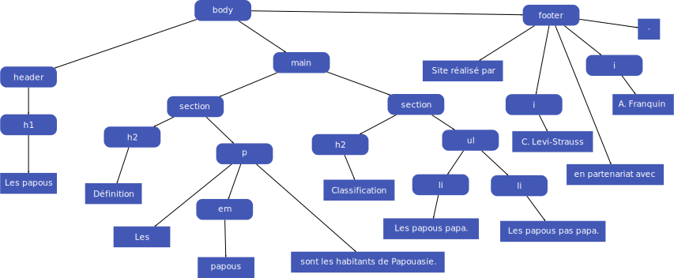

Quelques questions sur la couleur
À quoi correspond rgb(120, 56, 13) en hexadécimal ?
Le format RGB est un format de codage de couleur basé sur la propriété physique de l'additivité des couleurs primaires. En composant le rouge (Red), le vert (Green) et le bleu (Blue) on peut reproduire le spectre complet de la lumière, et donc (presque) toutes les couleurs, ici rgb(120, 56, 13) donne du maron.
- (160)_8 = (78)_16
- (56)_8 = (38)_16
- (13)_8 = (0D)_16
en hexadecimal on change en base 16 les digits octaux du code RGB (78380D)_16
Combien de couleurs chacune de ces trois méthodes (rgb, hexa ou nom de couleur) vous permettent d'obtenir ?
Etant donné que les couleurs sont encodées numériquement, il existe un nombre finis de couleurs possibles dans chaques encodage.
- RGB encodé avec un triplet d'octets en base 10 {255,255,255} ainsi 256^3=16 777 216. A noter que la méthode Rgb propose également un canal pour gérer la transparence
- HEXADECIMAL meme fonctionnement que RGB avec les octets codés en Hexadecimal. Même nombre de couleurs encodable
- Noms de couleurs système X11 limité(148 couleurs nommées)et peu commode. En revanche, les couleurs peuvent être assez ternees à l'impression
Comparaison des méthodes d'encodage de couleurs
Les système RGB/HEX sont assez semblable à l'usage mais en pratique ils ont tout les deux des avantages(et des inconvénients ).
- RGB est plus intuitif pour peu qu'on soit à l'aise avec la colorimétrie et sans avoir la contrainte de convertir de base 10 a 16. On quantifie les couleurs proportionellement entre 0 et 255 sur les différents spectre.
- HEX présente une simplicité d'encodage et de manipulation de donnée informatiquement du fait de son format Hexadecimal plus généralement utilisé en informatique.
- le systeme X11 est plus simple pour le néophite qui peut choisir les couleurs frace à un étalon et les référencer en utilisant un nom plutot qu'un code. De plus ce sont des couleurs normalisées utilises dans les système informatique utilisant le moteur graphique X11. Ces couleurs se distinguent par leurs qualité.
La Notion d'héritage
Questions sur l'arbre DOM
Combien cet arbre a t-il de noeuds ?
Au tôtal, l'arbre est constitué de 29 noeuds
- 12 noeuds de type texte (les feuilles )
- 17 noeuds de type éléments
Le Code HTML correspondant :
<body>
<header>
<h1>Les papous </h1>
</header>
<main>
<section>
<h2>Définition</h2>
<p>
les
<em>papous</em>
sont des habitants de papouasie
</p>
</section>
<section>
<h2>Classification</h2>
<ul>
<li>Les papous Papa</li>
<li>Les papous pas Papa</li>
</ul
</section>
</main>
<footer>
Site réalisée par
<i>C. Lewi-Strauss</i>
en ppartenariat avec
<i>A.Franquin</i>
.
</footer>
</body>
Selecteurs avancés
Casses tête sur les selecteurs
sur le code html suivant, comment mettre un fond rouge à "chataignes" et un fond cyan à "couverture"
<body>
<h1>Préparatifs pour l'hiver</h1>
<ul>
<li>Prévoir :
<ul>
<li>du <em>pain</em></li>
<li>du <em>chocolat</em></li>
<li>des <em>oranges</em></li>
<li>quelques <em>châtaignes</em>
</li>
</ul>
</li>
<li>une bonne <em>couverture</em><
/li>
</ul>
</body>
Le code CSS correspondant :
body>ul>li~li>em{
background: cyan;
}
ul ul li~li~li~li>em{
background: red;
}
Utilisation des selecteurs pour adapté le style au type de liens
[href^="mailto:"]{color: green;}// liens mail en vert
[href*="#"]{color: red;}// liens interne
[href*="http"]{color:purple;}// liens externes
Pseudos classes et pseudos éléments
Modification du style
On peut modifier l'apparence d'une balise a son survol grace au css. Par exemple auhmentation de la police et de la couleur au survol d'une balise p
p:hover { font-size:45; color:red;}
Essayez en survolant ce texte !
Quelle est la différence entre p:hover et p: hover?
- p:hover: le style pour une balise p survolée
- p :hover le style d'une balise p et d'une balise :hover
Les pseudos éléments
Modification du style de la balise q pour que les citations soient encadrées par des (") roses :
q::before, q::after{ content: "\0022"; color: hotpink; }
q { background: #62295AFF;}
voici une citation :
Un trou noir; c'est troublant
Règles de priorité
Casse tête
Le rendu du code avec le css correspondant : page exemple
Que se passe t-il ?:
La priorité des éléments se fait pour la balise la plus spécifique d'abord puis par ordre de déclaration.
- pour l'affichage
Ma page
est un h1 appartenant a body elle est désignée de maniere spécifique par * qui repere toutes les balises et donc en marron - pour l'affichage
Ceci est un parapgraphe
est un p id="intro" class="important" Les prétendant serait donc { *, body,#intro, p, p.important, body .important} le plus spécifique ici est l'usage de l'id=intro - pour l'affichage
Assez remarquable
est une em qui n'est pas surchargée depuis * ce sera donc marron - pour l'affichage
Et que dire de celui ci ?
est un p class="important" spécifique aux membres de la classe important inclus dans body